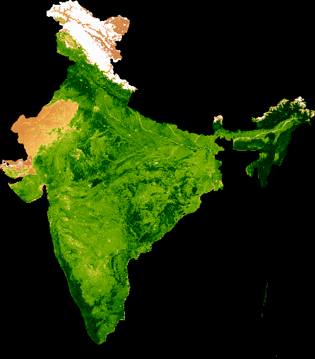

Climatological Phenology Visualization in Google Earth Engine
This project visualizes the "Green Wave"—the seasonal cycle of vegetation growth and senescence across the Indian subcontinent. By processing over 20 years of MODIS data, the script creates a synthetic "typical year" (climatology) to demonstrate phenological patterns.
Using Google Earth Engine, I implemented a custom Day-of-Year (DOY) joining methodology to reduce noise from cloud cover and sensor artifacts, resulting in a smooth, high-fidelity animation of India's agricultural and natural land-cover cycles.

Seasonal NDVI Animation: This GIF shows the median vegetation cycle across India, from the dry pre-monsoon brown to the post-monsoon green-up.
The MODIS NDVI Climatology script serves as a powerful baseline for environmental monitoring. It demonstrates my ability to process large-scale geospatial datasets and transform complex temporal data into intuitive visual products.